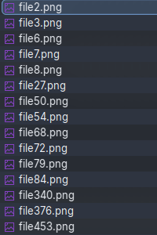
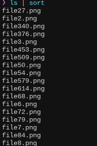
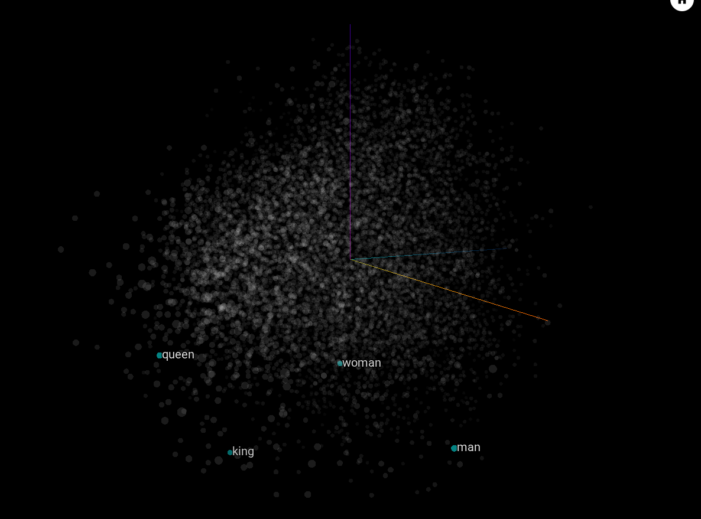
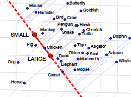

You may have heard of the legendary naturalSort in JavaScript.
/*
* Natural Sort algorithm for Javascript - Version 0.7 - Released under MIT license
* Author: Jim Palmer (based on chunking idea from Dave Koelle)
*/
function naturalSort (a, b) {
var re = /(^-?[0-9]+(\.?[0-9]*)[df]?e?[0-9]?$|^0x[0-9a-f]+$|[0-9]+)/gi,
sre = /(^[ ]*|[ ]*$)/g,
dre = /(^([\w ]+,?[\w ]+)?[\w ]+,?[\w ]+\d+:\d+(:\d+)?[\w ]?|^\d{1,4}[\/\-]\d{1,4}[\/\-]\d{1,4}|^\w+, \w+ \d+, \d{4})/,
hre = /^0x[0-9a-f]+$/i,
ore = /^0/,
i = function(s) { return naturalSort.insensitive && (''+s).toLowerCase() || ''+s },
// convert all to strings strip whitespace
x = i(a).replace(sre, '') || '',
y = i(b).replace(sre, '') || '',
// chunk/tokenize
xN = x.replace(re, '\0$1\0').replace(/\0$/,'').replace(/^\0/,'').split('\0'),
yN = y.replace(re, '\0$1\0').replace(/\0$/,'').replace(/^\0/,'').split('\0'),
// numeric, hex or date detection
xD = parseInt(x.match(hre)) || (xN.length != 1 && x.match(dre) && Date.parse(x)),
yD = parseInt(y.match(hre)) || xD && y.match(dre) && Date.parse(y) || null,
oFxNcL, oFyNcL;
// first try and sort Hex codes or Dates
if (yD)
if ( xD < yD ) return -1;
else if ( xD > yD ) return 1;
// natural sorting through split numeric strings and default strings
for(var cLoc=0, numS=Math.max(xN.length, yN.length); cLoc < numS; cLoc++) {
// find floats not starting with '0', string or 0 if not defined (Clint Priest)
oFxNcL = !(xN[cLoc] || '').match(ore) && parseFloat(xN[cLoc]) || xN[cLoc] || 0;
oFyNcL = !(yN[cLoc] || '').match(ore) && parseFloat(yN[cLoc]) || yN[cLoc] || 0;
// handle numeric vs string comparison - number < string - (Kyle Adams)
if (isNaN(oFxNcL) !== isNaN(oFyNcL)) { return (isNaN(oFxNcL)) ? 1 : -1; }
// rely on string comparison if different types - i.e. '02' < 2 != '02' < '2'
else if (typeof oFxNcL !== typeof oFyNcL) {
oFxNcL += '';
oFyNcL += '';
}
if (oFxNcL < oFyNcL) return -1;
if (oFxNcL > oFyNcL) return 1;
}
return 0;
}
Natural sort
Natural sorting aims to order strings based on what makes sense for humans. This is in contrast to standard mechanical ordering based on lexicographical order like in physical dictionaries of old.

Natural sort

Lexical sort
But what if we could sort any word without having to program every edge case? What about sequences like low, medium, high? Or heaven, earth, hell?
Surely LLMs are the right hammer for this job?
Naturalest sort?
You may have heard of the more recent vibeSort.
Input: file1,file10,file2
Output: {"sorted":["file1","file2","file10"]}
Input: low,high,medium
Output: {"sorted":["low","medium","high"]}
Input: heaven,hell,earth
Output: {"sorted":["heaven","earth","hell"]}
Input: monday,friday,tuesday,sunday
Output: {"sorted":["monday","tuesday","friday","sunday"]}
I think LLMs are overkill for this use case. LLMs may be the most natural sorter, but I was looking for something lighter.
Can we do this without LLMs? Let’s look at a less natural natural sort.
Natural sort using word embeddings
The idea behind this is to use word embeddings, or vectors that represent words in a conceptual space. The question is, are word embeddings sortable? Are embeddings even orderable? Is the order transitive? I set out to experiment.
Quick intro to word embedding arithmetic
Basically, we turn words into numbers so we can do math on them. Embeddings are high-dimensional vectors (> 300 coordinates) that describe word meanings. The key aspect is that words with similar meanings have vectors that are close in this conceptual space.
Since they are vectors, you can do math on them. A popular cherry-picked example is to add and subtract embeddings to ‘calculate’ the words King - Man + Woman = Queen.

This is the embedding space projected to 3D using principal component analysis, with a few interesting words highlighted.
The main idea is that individual dimensions encode specific meanings or features. In the King - Man + Woman = Queen example, there could be a Gender axis or a Nobility axis that makes the arithmetic work.
 Man, woman, king, and queen projected to 2D (not-to-scale illustration only). I made up the labels for the two resulting dimensions.
Man, woman, king, and queen projected to 2D (not-to-scale illustration only). I made up the labels for the two resulting dimensions.
The main hypothesis: Could there be an order axis in this conceptual space that encodes the natural order of words?
Is there an order vector that describes the general direction of going from Monday to Tuesday as well as low to medium to high?
If there is, the can we sort words by their embeddings’ positions based on this direction?
The search for the order vector
Naive solution: Just subtract a small-sounding word (say, "smallest") from a big word ("largest") and use the difference vector as the direction to order words in.
orderVec = word2vec("largest") - word2vec("smallest")
Projecting the input words onto this order vector should in theory give us a straightforward linear value for each word which is trivially sortable. Btw I’m using precomputed word2vec from Google to get word embeddings.
// Compute the order direction vector
const orderDir =
normalize(word2vec("largest") - word2vec("smallest"));
// Get the embeddings of the input words
const vecs = words.map(word2vec);
const ranks = Object.fromEntries(vecs.map((vec, i) =>
// Project each word by calculating
// its dot product against the 'order vector'
[words[i], dot(vec, orderDir)]
));
// Sort words according to the order vector ranking!
words.sort((a, b) => ranks[a] - ranks[b]);
Does it work? Let’s visualise an example:
The above diagram shows the word embedding vectors for tiny, small, etc., collapsed onto a single line — the line from "smallest" to "largest".
These diagrams are interactive! When loaded, click the diagram to expand the points to 3 dimensions!
Sorting words by the scalar values of their projections on the smallest-to-largest direction seems to produce a ‘natural’ sort!
It can even sort different kinds of semantic magnitudes, not just sizes per se, a couple of examples:
Even physical things:
It starts breaking down as you stray away from size or magnitude:
Sorting words completely unrelated to the concept of size/magnitude, like love and hate, fails.
The above example fails because our chosen anchor words "smallest" and "largest" have nothing to do with the love-hate scale. Well, I guess it’s still being sorted in a way, maybe from the least intense to the most intense emotion? so there’s that.
Other anchor words
The examples thus far have been using "smallest" and "largest" as ‘anchor words’.
An order vector that can actually sort hate and love is "worst" to "best" for some reason.
And of course, the two extremes within the list themselves would work perfectly, but obviously the sorting algorithm wouldn’t know which elements are the extremes beforehand.
The lesson here is that there are many potential order vectors, many axes to sort words in. One may make sense for a given set of input words, and another for a different set. We need to choose the right order direction vector per set of words. But how do we choose, and from what order vector choices?
The search for multiple order vectors
With the help of an LLM, I generated a bunch of anchor pairs for the algorithm to choose order vectors from.
const anchors = [
["least", "most"], ["low", "high"], ["light", "heavy"],
["worst", "best"], ["empty", "full"], ["uncertain", "certain"],
["quiet", "noisy"], ["back", "forward"], ["unusual", "typical"],
["dull", "sharp"], ["tiny", "huge"], ["frozen", "boiling"],
["poverty", "wealth"], ["left", "right"], ["small", "big"],
["early", "late"], ["young", "old"], ["start", "finish"],
…
];
After removing some hallucinations, I clustered them to reduce the amount of choices to process.
Clustering the order vectors seemed to partially validate the hypothesis, because there were two major clusters: one direction seemingly related to increasing magnitude, and the other direction like a general ‘value’ (?) direction. Does this mean there could actually be general order vectors in the conceptual space?
CLUSTER SIZE MEMBERS
'value' [61] narrow→wide, closed→open, down→up, low→high,
lowest→highest, below→above, weak→strong,
weakest→strongest, inferior→superior, sluggish→rapid,
dim→bright, worthless→valuable, boring→exciting, …
'magnitude' [40] least→most, few→many, back→forward, off→on,
calm→violent, quiet→noisy, dry→wet, rural→urban,
basic→advanced, plain→elaborate, cheap→expensive,
free→costly, easy→difficult, simple→complex,
trivial→challenging, smallest→largest, …
'sequence' [12] first→last, young→old, new→ancient, fresh→stale,
beginning→end, initial→final, start→finish,
minority→majority, inner→outer, cool→warm, …
'frequency' [10] before→after, none→all, never→always, seldom→often,
opening→closing, rare→common, uncertain→certain, …
'size' [9] minimum→maximum, affordable→luxurious, …
'space' [5] particular→universal, internal→external, …
Note: I manually labelled the clusters above. I picked the top 4 clusters, averaged them, and saved the averages as the final 4 order vectors to choose from.
If you want to see the actual values of the final order vectors, check this out.
To choose an order vector, we pick the one that spreads the input words the most along its axis. Large spread may not guarantee a meaningful ordering, but it’s good enough in practice, especially if the input words obviously have some scale.
// orderVecs contains the cluster averages of the top 4 clusters
const ranked = orderVecs
.map(orderVec => {
// project the words onto this order vector
const scores = wordVecs.map(v => dot(v, orderVec));
// calculate the spread
const spread = Math.max(...scores) - Math.min(...scores)
return { orderVec, spread };
})
// sort by spread
.sort((a, b) => b.spread - a.spread);
// get the order vector that most spreads the words
orderVec = ranked[0].orderVec;
The algorithm can now choose to sort words based on the best fit order direction. For example, the algorithm chooses the magnitude vector for these particular words:
The following words fall into the value vector, the good/bad axis:
Here are some words sorted by the sequence vector:
Interestingly, the particular metals bronze, silver, and gold are sorted as medals in first, second, and third places instead of increasing value. The choice of order vector being the sequence vector explains this.
Ironically though, the ordinals ("first", "second", "third", etc) aren’t quite correct:
For ordinals, the choice of order vector seems correct, but it went wrong with "fifth". Why?
The 2D plot via principal component analysis (PCA) reveals an interesting pattern with ordinals. Even though the ordinals appear to maintain a clear sequence and shape in conceptual space, halfway through they turn hard left.
The sequence vector may have only captured the initial direction of the ordinals. Indeed the anchors "first","last" are included in the sequence cluster, as well as synonyms/neighbors like "initial" and "early". This would’ve biased the direction towards the direction of the first item of the ordinals.
Finally, the frequency vector, the weakest of the top 4 clusters, included to squeeze some more coverage:
Limitations
The frequency vector’s weakness is an anchor word choice problem, that could be fixed by having better quality order direction vectors to choose from.
But there are more obvious failure cases with the order vector approach:
Days of the week and months have obvious sequences (or not, is it Sunday or Monday for the start of the week?) but these linear projections don’t quite capture it.
Let’s look at the 2D projections:
The days are clustered more strongly by weekday and weekend.
If you expanded the linear views above, you’d also see the same patterns: months and days are more blobby than linear. They have a different shape.
The months reveal another limitation:
May is an outlier.
The word "may" can mean different things. Word embeddings alone cannot capture the specific sense of the word within the context of the rest of the input words. Additional processing should be done to disambiguate the 5th month of the year "may" from the expression of possibility "may".
While the solution works in principle, there are many blind spots and edge cases to worry about. I explored a few more variants.
Rings in conceptual space
One variant was to use polar coordinates to sort. The idea was that days of the week are cyclical and would form a ring in conceptual space.
Almost there! I had a hunch that the weekends gain slightly different meanings from the rest of the week and so became outliers. If we removed them?
It’s a cycle, weekdays form a ring!? at least in 2D PCA projection!
What about months?
Removing the "may" outlier:
Without May, the months actually form a ring! The starting element is arbitrary when sorting by angle but the order is almost correct! if not for November.
In 3D PCA it’s a ring and a dot in front.
There is definitely some value in contextualising the meaning of each word in the list before sorting. I haven’t looked into that direction yet.
In the end I didn’t include angular sorting because there was no good crieria for when to use it and when to use linear projections.
Automatic line fitting instead of prepared order vectors
What if we just automatically fit a line through the words, and use that as the order vector? This eliminates the bias of human-curated anchor words.
Going back to the tiny-huge example:
Well, it’s completely wrong. If you turn your head sideways, you’ll notice the correct direction vector is almost orthogonal to the automatic line fit. At least in this projection.
Another sideways fit. It’s so easy for outliers to break the fit. I think this high-dimensional space is too noisy for line fitting to be useful.
Curated order vectors seem better. But I found one good example, the ordinals:
I kept adding ordinals until I got to 10th which failed. Impressive.
Maybe line fitting works better for longer sequences. More data points, better line.
Note that there is a 50% chance for the order to flip because the direction is arbitrary. Any line fitting algorithm can choose either of two opposing vectors that represent the same line.
In the end, curated vectors won while being the simplest variant. Just need to fix the ambiguity problem.
Natural sorting showdown
If we were to put orderings on a scale, we can put dictionary sorting on one extreme and LLM on the other end (or maybe an actual human). In the middle lies our solution which I’ll call wordSort, coming after naturalSort. Wait, did I just order the orderings? Sorted the sorts?
| Expected | Array.sort
(lexical) | naturalSort
(natural) | wordSort
(naturaler) | vibeSort
(naturalest)
|
|---|
| a, b, c | ✅a,
b,
c | ✅a,
b,
c | 🔁c,
b,
a | ✅a,
b,
c |
| low, medium, high | ❌high,
low,
medium | ❌high,
low,
medium | ✅low,
medium,
high | ✅low,
medium,
high |
| birth, life, death | ❌birth,
death,
life | ❌birth,
death,
life | ✅birth,
life,
death | ✅birth,
life,
death |
| dawn, noon, dusk | ❌dawn,
dusk,
noon | ❌dawn,
dusk,
noon | ✅dawn,
noon,
dusk | ✅dawn,
noon,
dusk |
| rare, uncommon, common | ❌common,
rare,
uncommon | ❌common,
rare,
uncommon | ✅rare,
uncommon,
common | 🔁common,
uncommon,
rare |
| bronze, silver, gold | ❌bronze,
gold,
silver | ❌bronze,
gold,
silver | 🔁gold,
silver,
bronze | ✅bronze,
silver,
gold |
| Monday, Tuesday, Wednesday, Thursday, Friday, Saturday, Sunday | ❌Friday,
Monday,
Saturday,
Sunday,
Thursday,
Tuesday,
Wednesday | ❌Friday,
Monday,
Saturday,
Sunday,
Thursday,
Tuesday,
Wednesday | ❌Monday,
Wednesday,
Thursday,
Tuesday,
Friday,
Saturday,
Sunday | ❌Sunday,
Monday,
Tuesday,
Wednesday,
Thursday,
Friday,
Saturday |
| first, second, third, fourth, fifth | ❌fifth,
first,
fourth,
second,
third | ❌fifth,
first,
fourth,
second,
third | ❌first,
second,
fifth,
third,
fourth | ✅first,
second,
third,
fourth,
fifth |
| file1, file2, file3, file10, file20 | ❌file1,
file10,
file2,
file20,
file3 | ✅file1,
file2,
file3,
file10,
file20 | N/A | ✅file1,
file2,
file3,
file10,
file20 |
| Wednesday, February 15, 2023; Sunday, December 1, 2024; Wednesday, March 5, 2025 | ❌Sunday, December 1, 2024;
Wednesday, February 15, 2023;
Wednesday, March 5, 2025 | ✅Wednesday, February 15, 2023;
Sunday, December 1, 2024;
Wednesday, March 5, 2025 | N/A | ✅Wednesday, February 15, 2023;
Sunday, December 1, 2024;
Wednesday, March 5, 2025 |
Isn’t it ironic that the most natural sorter is artificial intelligence?
Online demo
Congrats on making it this far. As a reward you can play with an online demo! Since this is a web demo, the vocabulary is limited, so bear with it and try to use very common words only!
Bonus: Organic sort
If you send a list of words to organic-sort-requests@leanrad.com, I will sort them with my meat brain and send the results back to you.
Conclusion
Experiment was mixed, but the results were surprisingly good. Word embeddings can be used sort words by meaning without any hardcoded rules or LLM calls. It’s not perfect but for 300 dimensions, it’s decent and it can run on a web browser!
It seems that word embeddings already encode order implicitly. We just need to find the right axis. For cyclical sequences, polar coordinates on the right plane can get close.
This particular implementation lacked a wide variety of order vectors to choose from. This could be mitigated by incorporating more diverse anchor words and increasing the clusters. This could help the algorithm find the perfect axis (or not! It could also add noise).
I think the biggest weakness is ambiguity. Word2vec assigns one static vector per word, so words with multiple meanings like "may" get an average vector across all their meanings as in ‘if I may’ and ‘5th of May’. Word-sense disambiguation is its own topic. Maybe a neural network like a transformer could be used to disambiguate words in the context of the full list to sort (it’s been done), but if you’re gonna run a neural network anyway on every sort then just use a language model and vibe sort it.
So this sits in an interesting middle ground between traditional natural sort (which only handles alphanumeric patterns) and LLM-sort (which understands everything but is expensive). Word embeddings are fast, offline, and handle semantic ordering… as long as the words aren’t too ambiguous.
Final question: Which came first?
Further reading
- Sorting for Humans (codinghorror blog, 2007)
- naturalSort (overset blog, 2008)
- Native JS via localeCompare (fuzzytolerance blog, 2019)
-
Semantic projection (Grand et al, 2018), same core idea

- Semantic axis (An, Kwak & Ahn, 2018), identifying pole words (anchor words)
- Deriving Adjectival Scales from Continuous Space Word Representations (Kim & de Marneffe, 2013), ranking words with static embeddings
- Ranking Scalar Adjectives with Contextualised Representations (Garí Soler & Apidianaki, 2020), ranking words with contextual embeddings